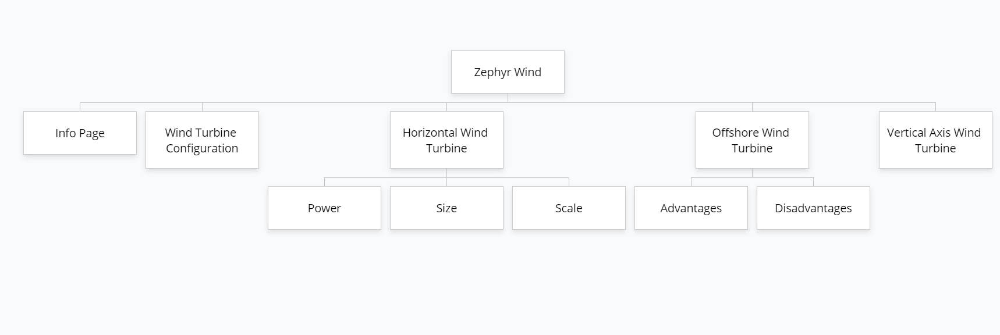
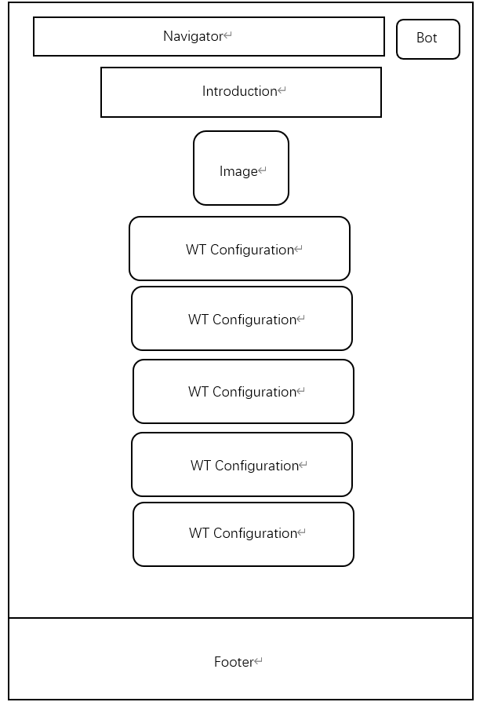
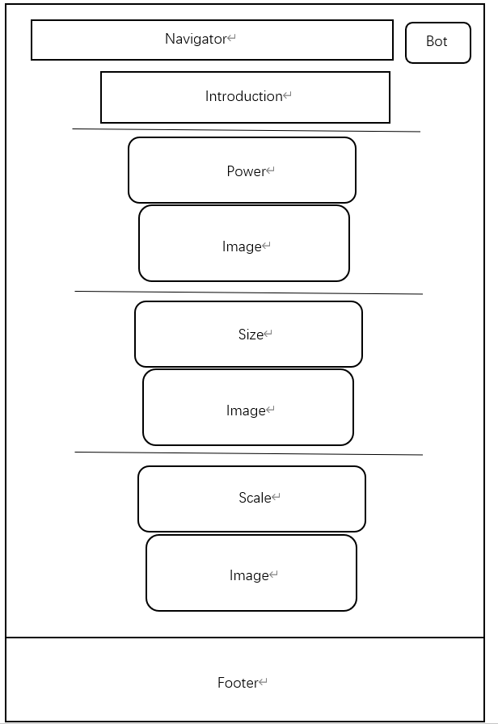
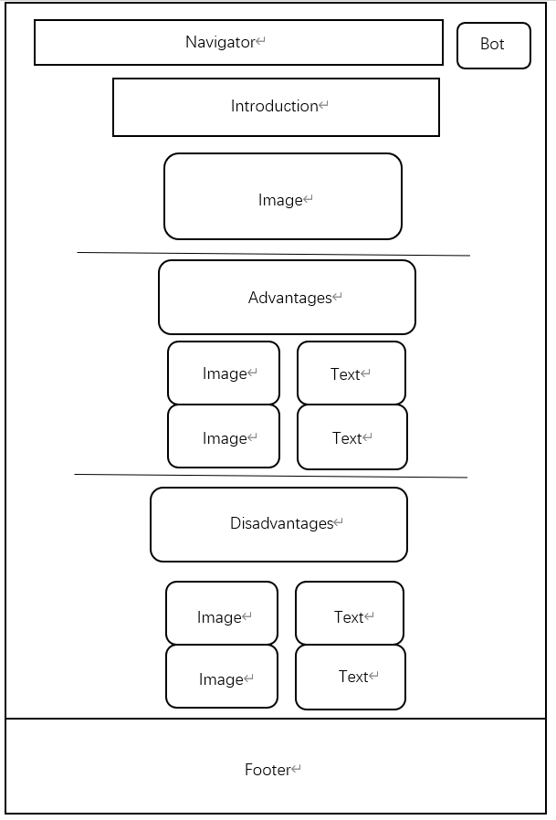
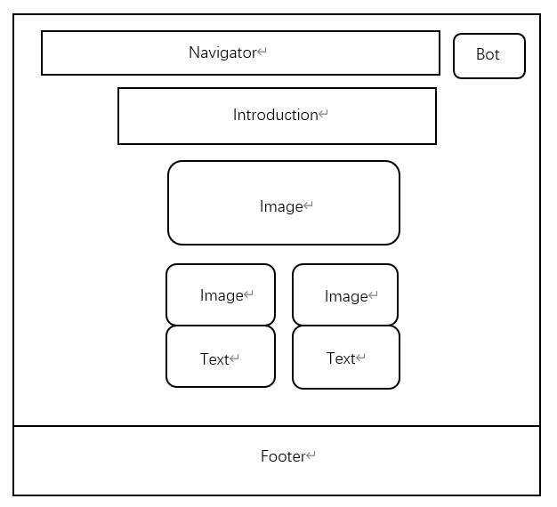
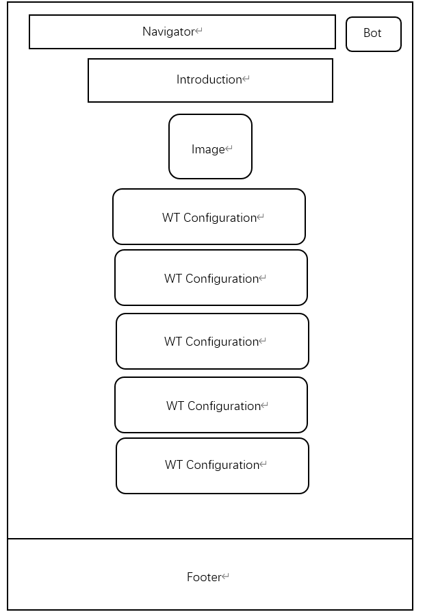
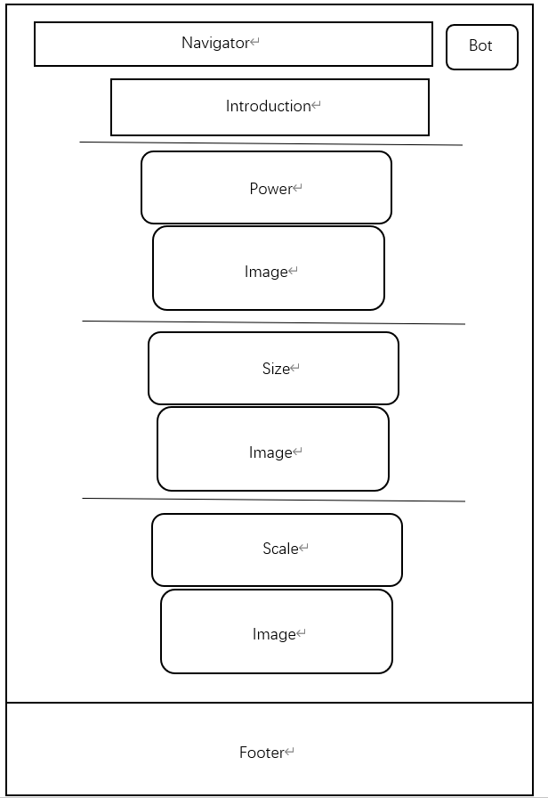
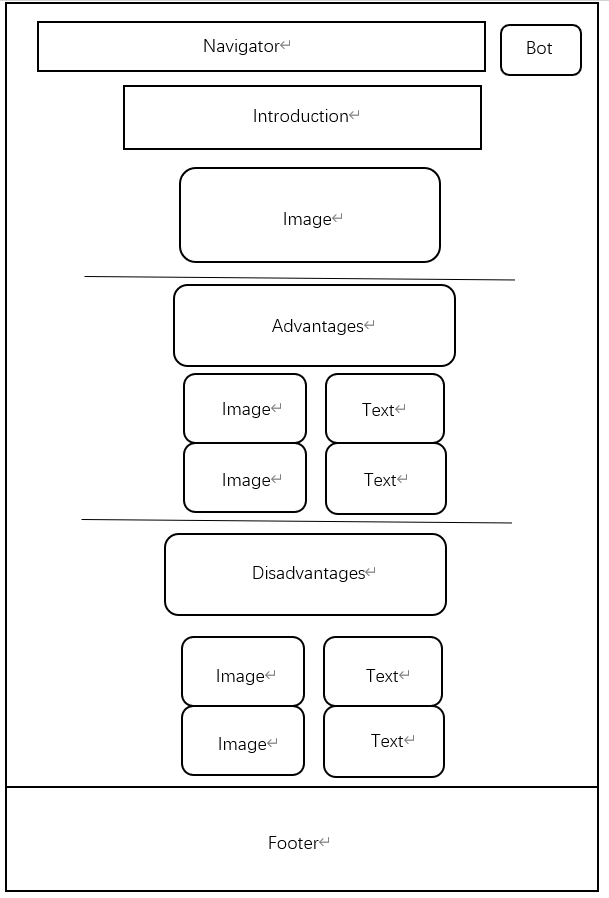
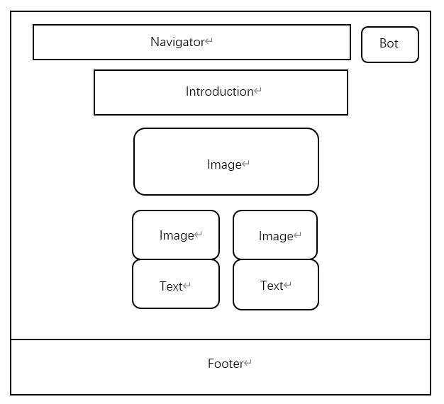

Final Website Report
Zhongxuan Hou
Indroduction
I have huge interest in the renewable energy, and I have recently taking course in wind energy. I have found that no much great websites for renewable energy learners to learn the basic idea of the wind energy. That is why I have decided to create my site. I want to introduce wind energy from a broad overview, instead of going into details. However, I will still cover the most essential part of the wind turbine that many people do not havea good idea of, such as the components and the vertial wind turbine.
Three things that I got inspiration from
Firstly, I have follow the structure of my previous group member. When we have a discussion on the layout of the website, he tells me about how to optimize the spacing between different pargraph so that it is not boring to read while the reader will not get tired by the large amount of information. Secondly, I take the inspiration from my professor from wind energy. The lecture slides he used have a very good summary of information that I have put in my website. Thirdly, the national energy website provides a lot of useful numbers regarding to the wind turbine, and I have taken advantage of using it.
Three things that my site is accessible
Firstly, I have good navigation bars that shows which page the reader is currently in, so the readers can follow it easily. Secondly, when introducing different topics, the images are linked to the specific section or pages in the website. Thirdly, the separator between different sections can help readers keep track of every paragraph.
Three ways I have considered usability in my site
Firstly, I don't want to create too many bottoms in the website, because that will distract my readers. Secondly, I put all the text centered-align so that the paragraph wont take the entire width of the browser, making it more readable. Thridly, the navigation bar has good size font and spacing that readers can navitage through easily.
State 3 things I have learned when creating the site
Firstly, when choosing the font and style, I have searched online template. The provided styling is much better than the default setting of the website. Secondly, I learned the declaration of different classes in the css file. By classifing different style in a cascading manner, the styling of the pages become much easier. I have also followed the tuturials of creating boxes as container. Using container properly helps me organize my content better, and the overall site looks good.
What aspects I think i have done well
I think the general styling of the webpage looks very clean for my sites, and the combination of the images and texts is balanced so that the website is more easy to look through. The usage of container box for different section makes my webpage more structured.
What aspects I needed to be improved
I wish I have more time to dive into more advanced application of the javascript, and the interactive part of my website is still not sufficient. Also, I have a hard time manipulate the navigation bar. If I have more time, I want to create sub-menu from the navigation bar. And currently, my webpage does not contains a wide varity of styles. Every page right now is very similar to the other pages. I want to implement other applications, such as login, comment section and even the interaction window to the website.
Site Map
Wireframe
 






